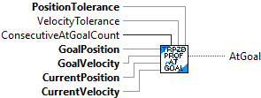

Calculate the correct position and velocity for the profile at a time t where the beginning of the profile was at time t = 0.
Inputs:
- Trapezoid_Profile -- The Trapezoid_Profile data cluster
- t -- The time since the beginning of the profile. (If the Trapezoid_Profile is freshly created every execution cycle, set t to be the time between calls.)
Outputs:
- Trapezoid_Profile -- Initialized Trapezoid_Profile data cluster
- state -- desired position and velocity values

DO NOT USE. THIS IS AN INTERNAL ONLY ROUTINE.
Flip the sign of the velocity and position if the profile is inverted
Inputs:
- State -- Trapezoid Profile State
- Direction -- SIgn value (-1, 1)
Outputs:
- State -- Updated Trapezoid Profile State

Convience, single call, LabVIEW function. Creates and calculates a Trapezoid Profile. Call this routine periodically to calculate the newest output for the provided inputs.
One use of a Trapezoid Profile is to calculate a velocity SP (Setpoint) for a position movement so that the velocity SP creates a trapezoid shape to allow for smoother operation and reduced overshoot.
Inputs:
- Max Speed -- Maximum allowable speed
- Max Accel -- Maximum allowable acceleration
- Goal Position -- Deisred final position
- Goal Velocity -- Desired velocity when goal position is reached. (Might often be zero.)
- Current Position -- Current position (This could be a measured value.)
- Current Velocity -- Current velocity (This could be a measured value.)
- TimePeriod -- Period between calls in seconds.
- Initialize -- If TRUE, the Goal values are reset to the inputs and the initial position and velocity are set to the current position and velocity.
Outputs:
- PositionDmd -- Current position demand (This could be used to calculate position error, or used in control.)
- VelocityDmd -- Current velocity demand. (This could be used as a setpoint to drive an actuator or motor.)
- EstTimeLeft -- Estimated time remaining until goal is achieved.
- TimeFinished -- The goal should have been reached because the estimated calculated time has expired.

Convience function to determine if the trapezoid profile goal has been reached.
Inputs:
- Position Tolerance -- Allowed position tolerance
- Velocity Tolerance -- Allowed velocity tolerance (Default 9.9E+30)
- ConsecutiveAtGoalCount -- How many times the position and velocity errors have to be within the tolerance to be considered "At Goal"
- Goal Position -- Deisred final position
- Goal Velocity -- Desired velocity when goal position is reached. (Might often be zero.)
- Current Position -- Current position (This could be a measured value.)
- Current Velocity -- Current velocity (This could be a measured value.)
Outputs:
- AtGoal -- The position and velocity errors have been within defined tolerance for at least the defined consecutive scan times.

Returns true if the profile has reached the goal.
The profile has reached the goal if the time since the profile started has exceeded the profile's total time.
Inputs:
- Trapezoid_Profile -- The Trapezoid_Profile data cluster
- t -- The time since the beginning of the profile.
Outputs:
- Finished -- True if the profile has reached the goal based soley on time being exceeded.

A trapezoid-shaped velocity profile.
While this class can be used for a profiled movement from start to finish, the intended usage is to filter a reference's dynamics based on trapezoidal velocity constraints. To compute the reference obeying this constraint, do the following.
Initialization:
- Create a new trapezoid profile constraint and provide Max Velocity and Max Acceleration
- Create an initial previous profile reference state and provide current position (distance, angle, or other) and Velocity
Run on update:
- Create a new trapezoid profile given the constraints, unprofiled (current) reference and the previous profile reference
- Calculate providing the time since last update, the result is a new previous profile reference
where `unprofiledReference` is free to change between calls. Note that when the unprofiled reference is within the constraints, `calculate()` returns the unprofiled reference unchanged.
Otherwise, a timer can be started to provide monotonic values for `calculate()` and to determine when the profile has completed via `isFinished()`.
Construct a TrapezoidProfile data cluster and performs initial calculations to fill data cluster
Inputs:
- constraints -- The constraints on the profile, like maximum velocity.
- goal -- The desired state when the profile is complete.
- initial -- The initial state (usually the current state).
Outputs:
- Trapezoid_Profile -- Initialized Trapezoid_Profile data cluster

A trapezoid-shaped velocity profile.
While this class can be used for a profiled movement from start to finish, the intended usage is to filter a reference's dynamics based on trapezoidal velocity constraints. To compute the reference obeying this constraint, do the following.
Initialization:
- Create a new trapezoid profile constraint and provide Max Velocity and Max Acceleration
- Create an initial previous profile reference state and provide current position (distance, angle, or other) and Velocity
Run on update:
- Create a new trapezoid profile given the constraints, unprofiled (current) reference and the previous profile reference
- Calculate providing the time since last update, the result is a new previous profile reference
where `unprofiledReference` is free to change between calls. Note that when the unprofiled reference is within the constraints, `calculate()` returns the unprofiled reference unchanged.
Otherwise, a timer can be started to provide monotonic values for `calculate()` and to determine when the profile has completed via `isFinished()`.
Construct a TrapezoidProfile data cluster and performs initial calculations to fill data cluster. A position and velocity of zero are used for as the initial state.
Inputs:
- constraints -- The constraints on the profile, like maximum velocity.
- goal -- The desired state when the profile is complete.
Outputs:
- Trapezoid_Profile -- Initialized Trapezoid_Profile data cluster

DO NOT USE. THIS IS AN INTERNAL ONLY ROUTINE.
Returns true if the profile inverted.
The profile is inverted if goal position is less than the initial position.
Inputs:
- initial The initial state (usually the current state).
- goal The desired state when the profile is complete.
Outputs:
- flip -- True if the profile is inverted.

Returns the time left until a target distance in the profile is reached.
Inputs:
- Trapezoid_Profile -- The Trapezoid_Profile data cluster
- target -- The target distance.
Outputs:
- timeLeft -- Time remaining to reach target (seconds)

Returns the total time the profile takes to reach the goal.
Inputs:
- Trapezoid_Profile -- The Trapezoid_Profile data cluster
Outputs:
- TotalTime -- Total time to reach goal (seconds)